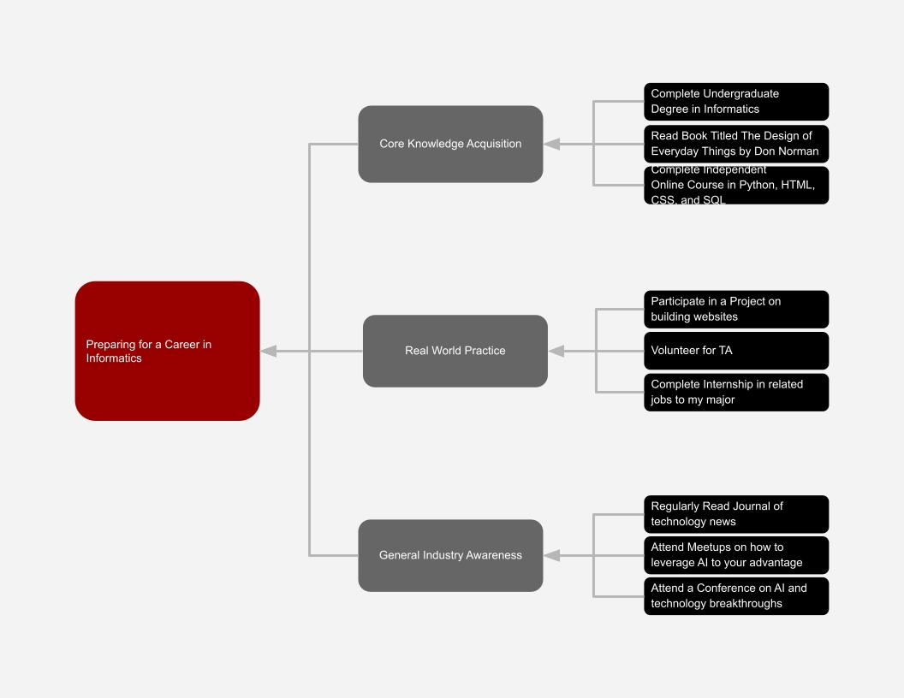

AI-assisted software development helps programmers write, understand, and debug code faster. Tools such as GitHub Copilot can suggest code while a developer types and can generate code from instructions written in normal language. This allows programmers to spend less time on repetitive coding tasks and more time solving problems.
GitHub found in one study that developers using Copilot completed a programming task about 55% faster. This changes software development because developers still need programming knowledge, but they also need to learn how to review and improve AI-generated code. I can prepare by continuing to learn Python, JavaScript, HTML, and CSS while practicing with AI coding tools and following updates from GitHub.
Data visualization uses charts, graphs, and dashboards to make large amounts of information easier to understand. Instead of reading rows of numbers, people can quickly identify trends, patterns, and unusual data. Tools such as Power BI and Tableau help users turn data into visual reports that are easier to analyze.
In informatics, visualization can help businesses understand information such as website activity, sales, or customer behavior. It allows people to make decisions faster without manually reviewing every piece of data. I can prepare for this type of work by learning Excel, SQL, and Power BI and by using Microsoft Learn tutorials to practice creating reports.
